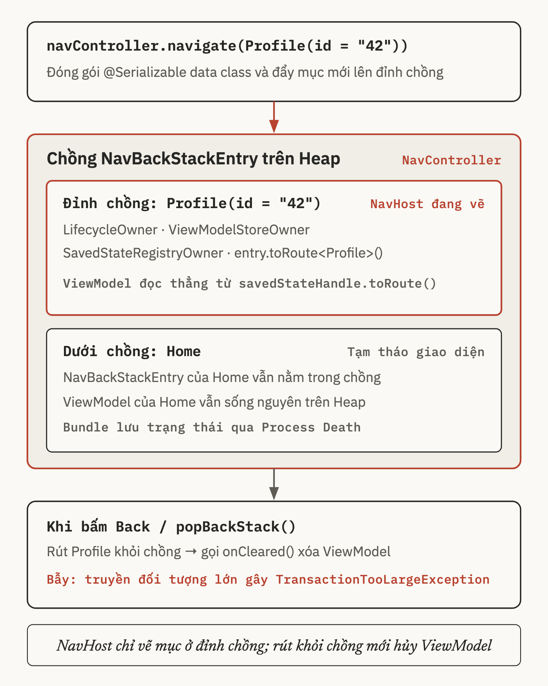

Navigation
Bản 30 giây
Trong Compose, các màn hình là những hàm nên bạn không mở màn hình mới bằng Intent hay FragmentTransaction. Thay vào đó, NavController giữ một danh sách điểm đến và bảo khung NavHost gọi đúng hàm của màn hình đang ở trên đỉnh. Khi bạn xoay máy hoặc ứng dụng bị tắt ngầm, danh sách này cùng các tham số truyền theo vẫn được tự động khôi phục.
Cần biết trước
Vấn đề buộc nó ra đời
Trước khi có Jetpack Navigation năm 2018, chuyển màn hình bằng FragmentTransaction rất dễ gây lỗi lệch chồng màn hình (back stack). Nếu hàm commit chạy sau khi Activity đã lưu trạng thái, ứng dụng sẽ sập ngay với lỗi IllegalStateException.
Khi chuyển sang Jetpack Compose năm 2021, các bản navigation-compose đầu tiên bắt bạn viết đường dẫn bằng chuỗi ký tự như "profile/{id}". Nếu gõ sai một chữ hoặc quên tham số, ứng dụng chỉ báo lỗi lúc người dùng bấm vào màn hình đó.
Tháng 9 năm 2024, bản Navigation 2.8.0 ra mắt cơ chế định tuyến kiểm tra kiểu (type-safe navigation) dựa trên Kotlin Serialization. Bạn dùng thẳng object hoặc data class gắn @Serializable làm đích đến để trình biên dịch bắt lỗi sai tham số ngay lúc viết code.
Nó thực sự là cái gì
Chuyển màn hình trong Compose không phải là tạo cửa sổ mới mà là đổi hàm được gọi trong NavHost qua một lần Recomposition. Thực chất, NavController quản lý một chồng các đối tượng NavBackStackEntry nằm trên bộ nhớ Heap. Mỗi NavBackStackEntry tự gom cả ba vai trò: chủ vòng đời (LifecycleOwner), kho chứa ViewModel (ViewModelStoreOwner) và bộ lưu trạng thái (SavedStateRegistryOwner).
Cơ chế

Khi bạn gọi navController.navigate(Profile(id = "42")), thư viện biến Profile thành gói tham số rồi đẩy một NavBackStackEntry mới lên đỉnh chồng. NavHost đang lắng nghe biến State của chồng này sẽ tự chạy lại để vẽ màn hình Profile và ngừng vẽ màn hình Home. Dù Home không còn trên cây giao diện, NavBackStackEntry của nó vẫn nằm trong chồng nên ViewModel của Home vẫn sống nguyên. Khi người dùng bấm nút Back, mục Profile bị rút khỏi chồng và hệ thống gọi onCleared() để dọn sạch ViewModel của Profile.
Đánh đổi
Gắn ViewModel và SavedStateHandle theo từng NavBackStackEntry giúp mỗi màn hình tự giữ dữ liệu khi xoay máy và tự dọn khi thoát. Đổi lại, mọi dữ liệu truyền qua navigate đều bị chép vào Bundle để hệ thống giữ hộ khi ứng dụng xuống nền. Nếu bạn nhét đối tượng nặng vào đường dẫn thay vì chỉ truyền mã id, giao dịch lưu trạng thái sẽ bị nghẽn.
Nguyên lý gốc
Mỗi bước đi là một bản ghi dữ liệu độc lập, còn giao diện trên màn hình chỉ là hình chiếu của đỉnh chồng.
Key insight
Đi tiếp bằng
navigatechỉ tháo giao diện khỏi cây vẽ, còn rút mục đó khỏi chồng bằngpopBackStackmới hủyViewModel.
Khuôn mẫu chuẩn
@Serializable object Home
@Serializable data class Profile(val id: String)
@Composable
fun AppNavHost(navController: NavHostController = rememberNavController()) {
NavHost(navController = navController, startDestination = Home) {
composable<Home> { HomeScreen(onOpen = { navController.navigate(Profile(it)) }) }
composable<Profile> { entry -> ProfileScreen(entry.toRoute<Profile>()) }
}
}
Bẫy & ranh giới
Truyền nguyên đối tượng User nhiều trường qua navigate làm phình bộ nhớ Bundle và dễ gây lỗi TransactionTooLargeException khi hạ ứng dụng xuống nền. Bạn chỉ được truyền mã nhỏ gọn như id, rồi để ViewModel màn hình đích đọc qua savedStateHandle.toRoute() và tự tải dữ liệu từ kho. Một bẫy nữa là bấm đúp nhanh làm navigate chạy hai lần, đẩy hai màn hình trùng nhau lên chồng hoặc gây sập ứng dụng. Ngoài ra, đừng truyền navController xuống sâu các hàm con, mà hãy truyền callback như onOpen để màn hình con dễ kiểm thử độc lập.
Câu hỏi thực chiến
Hỏi: Khi từ màn hình danh sách Home bấm mở màn hình chi tiết Profile, ViewModel của Home có bị hủy không?
Không. Màn hình Home chỉ tạm rút khỏi cây giao diện để nhường chỗ cho Profile, nhưng NavBackStackEntry của Home vẫn nằm dưới chồng. Nhờ vậy, khi người dùng bấm Back quay về Home, ViewModel cũ vẫn còn nguyên mà không phải tải lại dữ liệu.
Hỏi: Có nên truyền cả đối tượng dữ liệu lớn qua data class của navigate cho tiện không?
Không được làm vậy. Mọi tham số trong đường dẫn đều được lưu vào Bundle của hệ thống để phục hồi khi xảy ra Process Death. Nếu gói dữ liệu vượt ngưỡng giới hạn của Binder (khoảng 1MB dùng chung cho cả tiến trình), ứng dụng sẽ sập vì lỗi TransactionTooLargeException.
Hỏi: Làm sao lấy được tham số của đường dẫn @Serializable ngay bên trong ViewModel mà không cần truyền từ giao diện vào?
Bạn nhận SavedStateHandle qua hàm khởi tạo của ViewModel, rồi gọi thẳng hàm mở rộng savedStateHandle.toRoute<Profile>(). Thư viện Navigation 2.8.0 tự giải mã các trường trong SavedStateHandle về lại đúng đối tượng Profile an toàn kiểu cho bạn.
Hỏi: Nếu người dùng bấm liên tục vào tab dưới đáy màn hình thì làm sao tránh đẻ ra hàng chục bản sao của cùng một tab trên chồng?
Khi gọi navController.navigate, bạn bật cờ launchSingleTop = true kèm popUpTo về điểm đầu đồ thị với saveState = true và restoreState = true. Cách này giúp giữ đúng một bản của mỗi tab và nhớ luôn vị trí cuộn của từng tab khi chuyển qua lại.
Ý bắt buộc khi giải thích lại
- Giải thích được ba vai trò của NavBackStackEntry: giữ Lifecycle, giữ ViewModelStore riêng và giữ SavedStateHandle qua Process Death.
- Phân biệt được việc màn hình tạm ẩn xuống dưới chồng (ViewModel còn sống) với việc bị rút khỏi chồng bằng popBackStack (ViewModel bị gọi onCleared).
- Nêu được cách định tuyến kiểm tra kiểu bằng @Serializable và toRoute() từ Navigation 2.8.0, cùng lý do chỉ truyền id thay vì đối tượng lớn.
- Viết lại được khuôn mẫu chuẩn từ trí nhớ.
Nguồn
- Navigation with Compose — Android Developers
- Type safety in Kotlin DSL and Navigation Compose
- Jetpack Navigation Release Notes 2.8.0